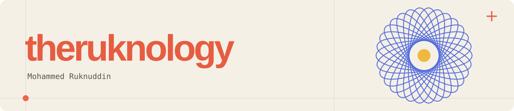
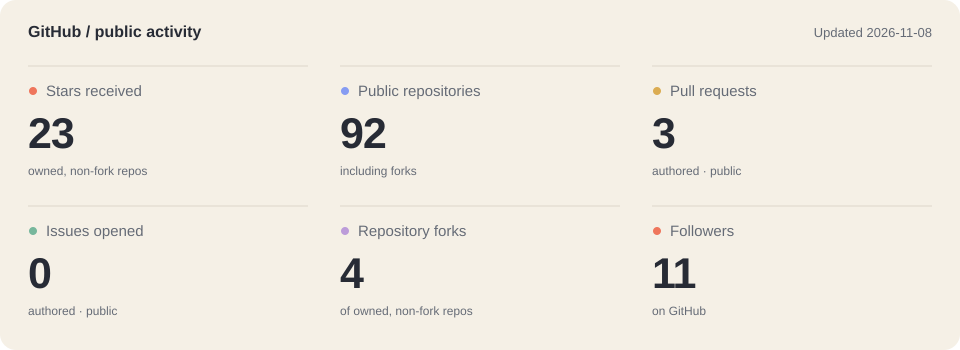

Hey, I’m Mohammed.
I write software in Go, Python, Rust and TypeScript. Lately that’s meant inference scheduling, tools for testing agents, and a chess trainer that picks puzzles based on how you play.
I like getting into the details of how things work, and spending just as much time on how they feel to use.
LinkedIn / YouTube / Instagram
Things I’ve been building
|
An inference gateway that shares backend capacity between tenants. Weighted scheduling, token-cost estimates and deadline-aware admission.
Go · gRPC · Prometheus
|
A chess tactics trainer with a Bayesian skill model for each theme. Selects puzzles as you play; runs entirely in the browser.
TypeScript · Vite
|
|
An x402 payment library and a simulated market of scripted agents. Payment budgets, replay protection and a double-entry ledger.
Go · x402
|
Local semantic search over tmux scrollback. Find earlier terminal output with a natural-language query, then jump back to it.
Rust · SQLite · Ratatui
|
Earlier-stage work
AgentProbe tests whether an LLM agent attempts prohibited tool calls in adversarial scenarios. Python CLI with mocked tools; the scenario set is still small.
llm-rs is a learning project: implementing transformer inference in Rust, targeting WebAssembly. Work in progress.
peek, in use
Search for an earlier error, then jump back to it in tmux.

Other tools used across these projects: Docker, Prometheus, Vite, sqlite-vec and Ratatui.
On GitHub


My GitHub contributions, with a snake. Updated every 12 hours.